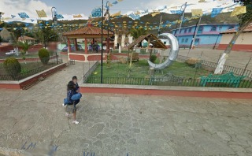
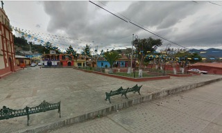
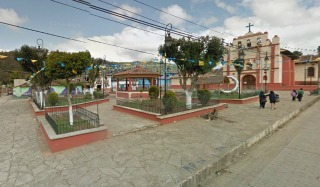
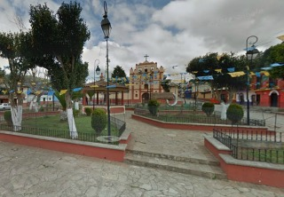
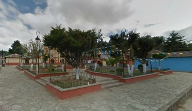

La plazuela de cuxtitali fue construida al mismo tiempo que la iglesia, las cuales fueron construidas por los indios quichés, quienes dieron el nombre de cuxtitali que quiere decir "tierra roja", debido al color del suelo donde fueron construidas la plazuela y la iglesia.
En esta plazuela se celebra con una pequeña feria al dulce nombre de jesus, el santo patrono de la iglesia.
A unos kilometros de la plazuela se encuentran dos plantas hidroeléctricas que durante largo tiempo fueron las únicas fuentes de energía de la ciudad.
Se encuentra ubicada en la calle de los arcos, en el barrio de cuxtitali.
Si usted se encuentra ubicado en la plaza de la paz viendo de frente hacia la catedral puede caminar hacia su derecha al finalizar la catedral, desplazándose despues a su izquierda pasando entre el costado de la catedral y la plaza 31 de Marzo. Como referencia encontrará la farmacia del ahorro y Frente a este la zapateria pakar entre estos dos lugares encontrará el andador guadalupano, camine sobre este hasta terminar y camine una cuadra mas hasta encontrar la avenida la almolonga, de vuelta a su isquierda y camine una cuadra sobre esta avenida, al terminar la cuadra continue caminando sobre la ahora avenida vicente guerrero hasta llegar a la calle comitán como referencia usted se encontrará en la esquina del museo na-bolom, de vuelta a la derecha y camine sobre la ahora calle comitán hasta encontrar la diagonal de las delicias, de vuelta a la izquierda y camine sobre esta diagonal hasta encontrar la calle margaritas, de vuelta sobre esta calle y camine una cuadra para luego dar vuelta a la derecha y tomar la avenida franz bloom, continue sobre esta avenida dos cuadras mas y luego tome la calle de los arcos y continue caminando hasta encontrar la plazuela.
En el lugar usted puede realizar actividades como:
* Visita a iglesias
* Asistencia a fiesta popular





posicione el mouse sobre las imágenes